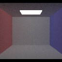
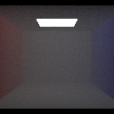
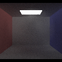

CS184 Final Project · Milestone · November 22, 2026
Silver Lining
A volumetric cloud and god-ray renderer
Diego Jiang · Ralfi Bahar · Yuheng Wang · Diego Vargas de Souza
What we have accomplished
We extended our HW3 surface path tracer into an integrated CPU renderer for participating media. Light can now be absorbed and scattered inside a bounded volume, while surfaces and opaque shadows remain part of the same path.
- Medium foundation: homogeneous fog, scene settings, surface/volume path integration, and regression tests.
- Scattering and lighting: configurable Henyey–Greenstein (HG) scattering and direct volume illumination.
- Cloud density: seeded procedural noise on a 48 × 48 × 48 grid, interpolation, and delta-tracked collisions.
- Shadow attenuation: analytic homogeneous transmittance and ratio tracking for heterogeneous clouds.
Preliminary results



Our renders: same scene and camera; 128 × 128 pixels, 64 samples/pixel, depth 6, one thread. Medium settings differ; these are preliminary previews, not a noise-controlled convergence study.
Validation: all six test suites pass in Release and RelWithDebInfo builds, including parallel execution. Combined cloud/HG/ratio-tracking single-scattering estimates agree with analytic references within five standard errors at g = 0, 0.5, and 0.8. Additional checks cover vacuum, clipping, blockers, and emitter handling; repeated single-thread cloud renders produce identical PNGs.
Progress relative to our plan
The core transport modules are now connected. Integration required explicit phase configuration, shared shadow attenuation, and consistent test/build settings. Our proposal’s visual goals—clear silver lining and window light shafts—are not demonstrated yet; this milestone establishes the tested foundation.
Updated work plan
- Build a backlit cloud scene to demonstrate forward scattering and silver lining.
- Compare noise and runtime across sample counts and phase settings using fixed scenes and seeds.
- Add window light shafts; pursue animation after the static scenes are stable.